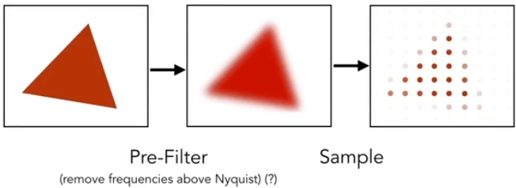
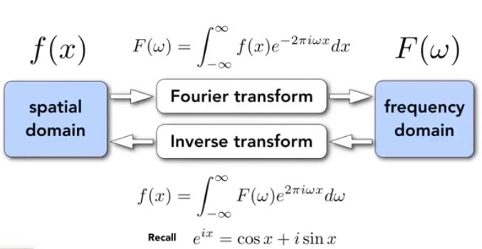
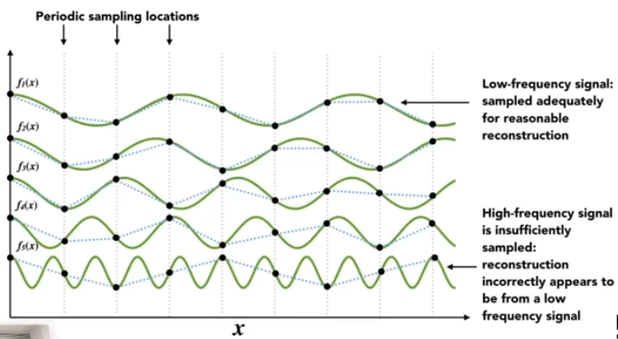
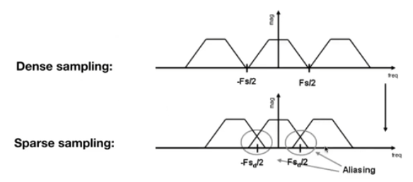
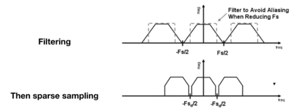
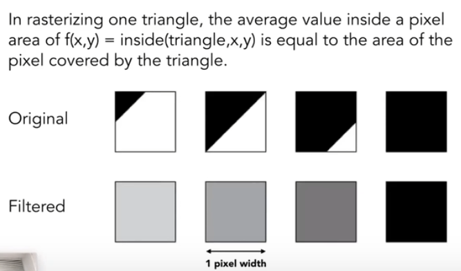
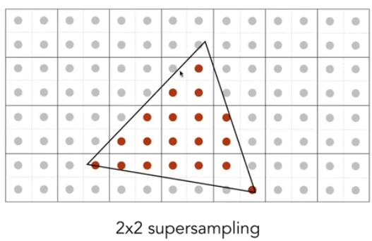
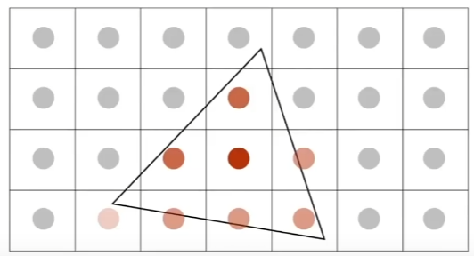
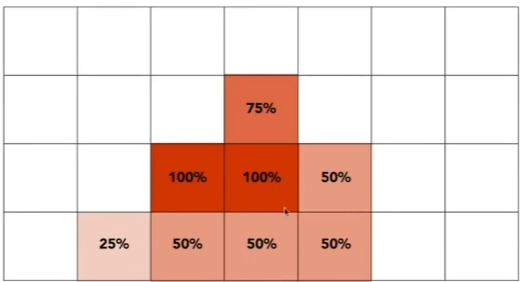

GAMES 101 L06-Rasterization 2 (Antialiasing 反走样 and Z-Buffering)
Sampling Artifacts (瑕疵)
- Jaggies - sampling in space
- Moire Patterns (摩尔纹) - undersampling images
- Wagon wheel effect - sampling in time
root cause: signals are changing too fast (high frequency) but sampled too slowly.
Antialiasing idea - Blurring (pre-filtering) Before Sampling

Note antialiased edges in rasterized trianglewhere pixel values take intermediate values.
How Aliases are Created
Aliases
The Fourier series represents a periodic function as a sum of sines and cosines (or complex exponentials). This decomposition shows how a function can be expressed as a combination of simple harmonic components. The Fourier transform generalizes the Fourier series to analyze non-periodic functions or signals. It decomposes a signal into its frequency components, showing how much of each frequency is present in the signal.

Higer frequencies needs faster sampling.

Two frequencies that are indistinguishable at a given sampling rate are called “aliases”.
Filtering
Filtering: getting rid of certain frequencies.
Filtering = Convolution = Average
Convolution in the spatial domain is equal to multiplicationin the frequency domain, and vice versa
- Option 1:
Filter by convolution in the spatial domain. - Option 2:
Transform to frequency domain (Fourier transform). Multiply by Fourier transform of convolution kernel. Transform back to spatial domain (inverse Fourier).
Summary
Sampling = Repeating Frequency Contents
Aliasing = Mixed Frequency Contents
Aliasing occurs when a signal or image contains high-frequency details that are inadequately sampled.
How to Reduce Aliasing Errors
- Option 1: Increase sampling rate
Essentially increasing the distance between replicas in the Fourier domain.
Higher resolution displays, sensors, framebuffers…
But: costly & may need very high resolution - Option 2: Antialiasing
Making Fourier contents “narrower” before repeating, i.e. Filtering out high frequencies before sampling.
See the two figures below. The horizontal axis in the figure represents frequency, with 0 Hz at the center. Moving away from the center represents higher frequencies. Fs/2 and -Fs/2 represent the Nyquist frequency (see explanation below), the highest frequency that can be represented accurately for a sampling rate Fs. Initially, as shown in the first figure, mixed frequencies caused aliases. In the second figure, if we remove the high frequencies, the mixed part no longer exists, anti-aliasing achieved.


PS: Nyquist-Shannon Sampling Theorem
To accurately represent a signal, the sampling rate must be at least twice the highest frequency in the signal. This threshold is called the Nyquist frequency:
If this condition is not met, aliasing occurs.
PPS: If sampled first, low-frequency information will be aliased.
A Practical Pre-Filter
Solution:
- Convolve f(x,y) by a 1-pixel box-blur
Recall: convolving =filtering= averaginge - Then sample at every pixel’s center

Antialiasing by Supersampling - Multisample Anti-Aliasing (MSAA)
- Take samples in each pixel.
 - Average the samples inside each pixel.


In practice, industry don’t use regularly spaced samples, instead they place samples based on a predefined sampling pattern, to use less samples getting the same effect as more samples.
Other Anti-Aliasing Techniques
- FXAA (Fast Aproximate AA)
- TAA (Temporal AA)
Super resolution / Super Sampling
- From low resolution to high resolution
- Essentially still “not enough samples” problem
- DLSS (Deep Learning Super Sampling) to “guess” the missing part
Z-Buffer (深度缓存)
- Store current min. z-value for each sample (pixel)
- Needs an additional buffer for depth values
- frame buffer stores color values
- depth buffer (z-buffer) stores depth
IMPORTANT: For simplicity we suppose z is always positive (smallerz -> closer, larger z -> further).
Initialize depth buffer to \infinity.
During rasterization:
1 | |
- Complexity: O(n) for n triangles (assuming constant coverage).
- Drawing triangles in different orders won’t affect the result of z-buffer.
- Z-buffer is the most important visibility algorithmeImplemented in hardware for all GPUs.
- Z-buffer cannot handle transparent objects, they need special methods.